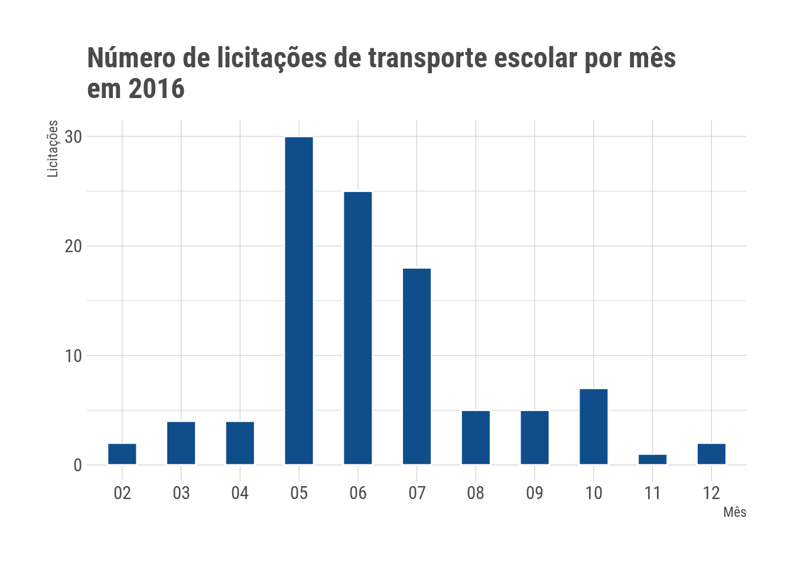
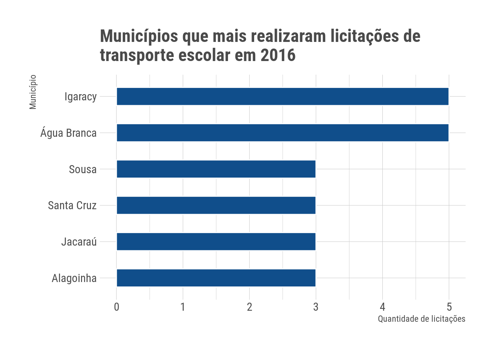
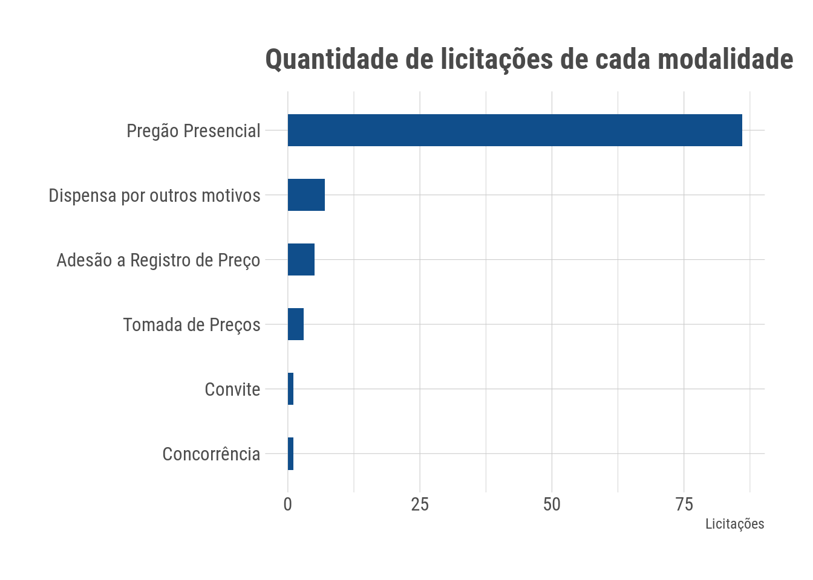
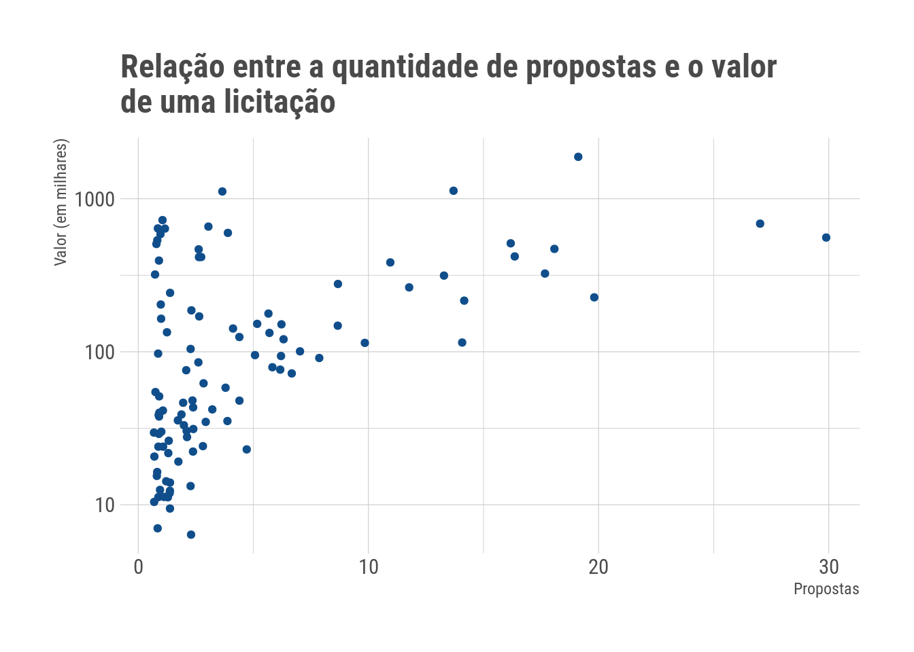
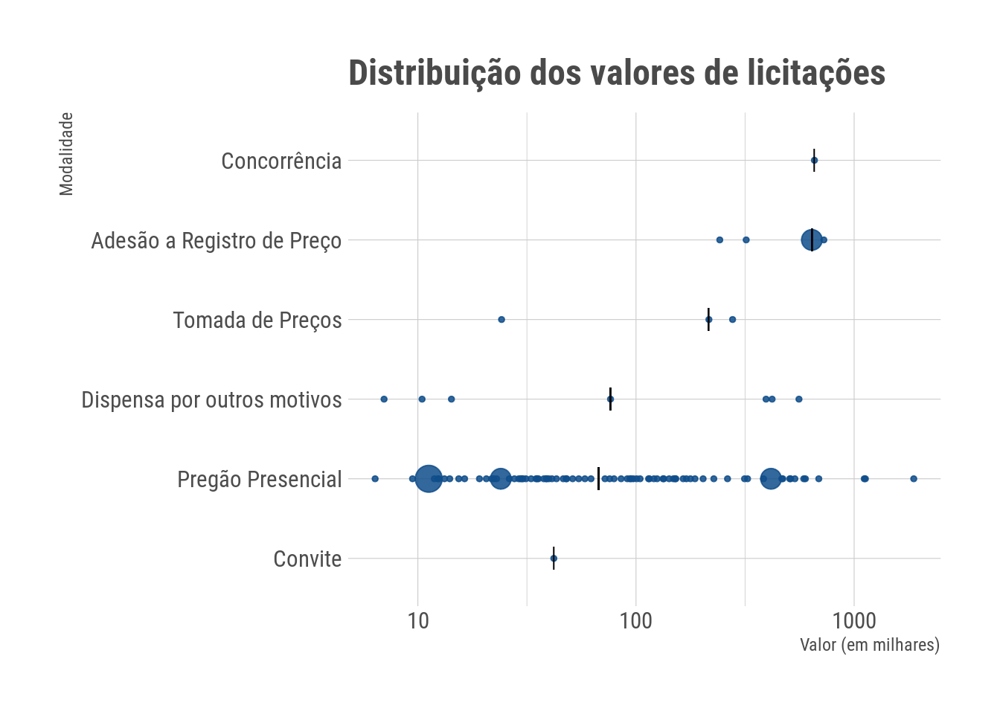
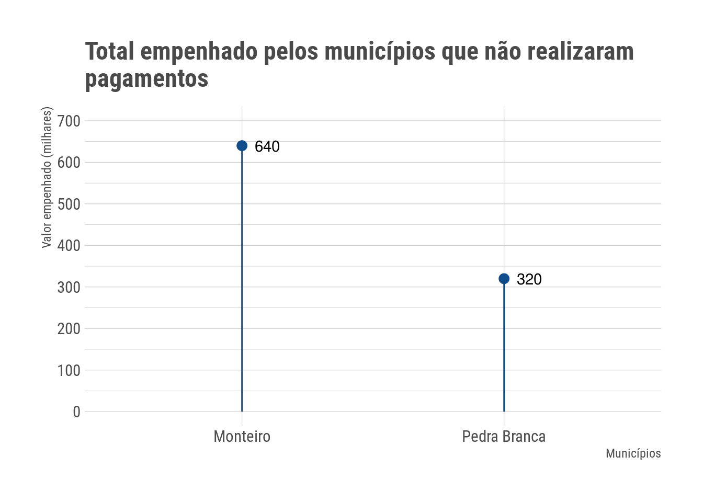
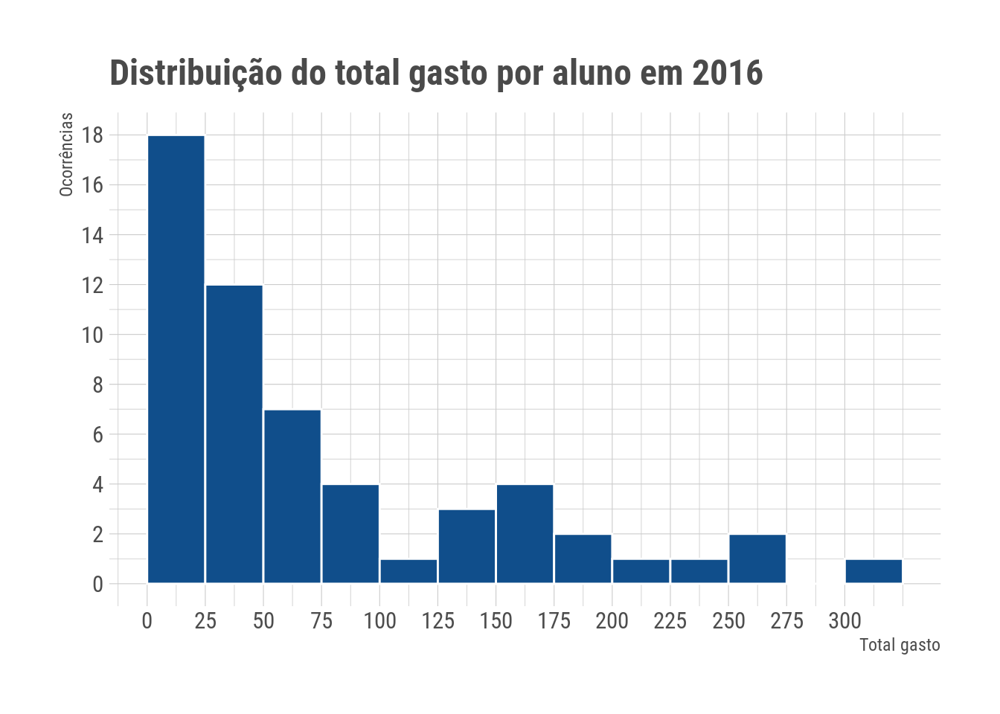

Transporte escolar na Paraíba em 2016
Nesse post realizamos uma análise sobre os gastos com transporte escolar no estado da Paraíba em 2016. Os dados utilizados foram obtidos a partir da plataforma SAGRES do Tribunal de Contas do Estado da Paraíba, que contém informações sobre gastos públicos dos municípios.
Licitações de transporte escolar
Uma boa forma de começar é verificar quantas licitações sobre transporte escolar foram realizadas em 2016. Existem, ao todo, 103 licitações relacionadas ao transporte escolar, que representam apenas 1.26% do total de licitações realizados nesse mesmo ano. Vejamos qual a época do ano onde foram realizadas mais licitações.

O mês de maio foi o que teve maior número de licitações de transporte escolar, seguido de junho e julho, respectivamente. Isso chama atenção, pois o esperado é que a maioria das licitações ocorram nos primeiros meses, quando são firmados os contratos do ano inteiro.
E por município, quantas licitações foram realizadas?

Entre os municípios que mais realizaram licitações, os que mais se destacaram foram Igaracy e Água Branca. As licitações de Igaracy ocorreram nos meses de março a junho, e todas para contratação de veículos com motoristas para transporte de estudantes da zona rural para as escolas situadas na zona urbana. Enquanto que em Água Branca, todas foram contratações de veículos destinados para o próprio município.
A quantidade de municípios que fizeram alguma licitação é 74, representando aproximadamente 33.18% dos municípios da Paraíba.
Descrição das licitações
Agora que sabemos um pouco mais sobre as licitações de transporte escolar realizadas em 2016, é interessante investigar sobre o que são estas licitações. Realizamos, então, uma análise na descrição destas, e, a partir disto, nós as dividimos em três grupos: Locação, Contratação e Aquisição.
Abaixo, descrevemos cada grupo.
- Locação: neste grupo estão as licitações relacionadas às locações de veículos para transporte dos estudantes.
- Contratação: aqui as licitações são referentes à:
- contratação de veículo para o transporte dos estudantes;
- contratação de serviços para o transporte escolar;
- contratação de empresa para a locação ou prestação de serviços para o transporte escolar;
- contratação de pesssoa física ou jurídica para locação de transporte ou execução de serviços relacionados ao transporte escolar.
- Aquisição: as licitações desse grupo são relacionadas à aquisição de veículos para o transporte escolar.
| Título | Porcentagem (%) |
|---|---|
| Contratação | 72.82 |
| Locação | 19.42 |
| Aquisição | 4.85 |
| Não atribuído | 2.91 |
Mais de 70% das licitações estão relacionadas à contratação de empresa, pessoa fisíca ou pessoa jurídica para prestar serviços ao transporte escolar dos municípios.
Modalidade de licitação mais comum na execução dos serviços de transporte escolar
A modalidade indica o procedimento que irá reger a licitação. No Brasil, atualmente, as modalidades de licitação são seis. Cinco delas estão descritas no artigo 22 da Lei de Licitações e Contratos, a lei nº 8666/93. São elas: concorrência, tomada de preço, convite, concurso e leilão. Já o pregão foi instituído em 2002, através da lei nº 10.520/02. Cada modalidade possui características específicas, e uma série de fatores são levados em consideração na hora de sua escolha, como, por exemplo, o valor da transação e o tipo de produto ou serviço que será adquirido pela administração pública.

A modalidade mais comum nas licitações sobre transporte escolar é o Pregão Presencial. Nas versões presencial e eletrônica, o pregão não determina limites para os valores, sendo que a disputa ocorre durante sessão pública. O vencedor é o concorrente que oferece o menor preço.
Existe alguma relação entre o número de propostas e o valor de uma licitação?

Licitações de valores mais altos receberam mais propostas. Embora existam licitações de valor alto que receberam poucas propostas, não é possível ver no gráfico, por exemplo, licitações que receberam mais que 10 propostas com valor menor que R$ 100 mil.
Em geral, qual o valor de uma licitação? Esse valor varia entre cada modalidade?
Já que a mediana representa o valor que separa a metade menor e maior de um conjunto de dados, e, ao contrário da média, não é afetada por valores extremos, utilizaremos esta medida para representar o valor geral de uma licitação.
| Modalidade | Mediana do Valor (R$) |
|---|---|
| Concorrência | 657690.0 |
| Adesão a Registro de Preço | 640000.0 |
| Tomada de Preços | 215900.0 |
| Dispensa por outros motivos | 76425.0 |
| Pregão Presencial | 67142.5 |
| Convite | 42000.0 |
Vejamos, agora, a distruibuição dos valores de licitações para cada modalidade.

No gráfico acima, a linha preta representa a mediana, e o tamanho do ponto a quantidade de licitações daquela modalidade com aquele valor. Com exceção das modalidades que possuem apenas uma observação, os valores das licitações não se concentram em uma mesma faixa. Vejamos mais detalhes sobre as licitações de valor mais alto.
| Licitação | Descrição | Valor (R$) | Município |
|---|---|---|---|
| 000172016 | LOCACAO DE ONIBUS E KOMBI COM MOTORISTA, MANUTENCAO E ABASTECIMENTO PARA O TRANSPORTE ESCOLAR, JUNTO A SECRETARIA DE EDU | 1876512.0 | Santa Rita |
| 000072016 | CONTRATACAO DE PESSOA JURIDICA E PESSOA FISICA PARA LOCACAO DE TRANSPORTE ESCOLAR ATENDENDO AOS ALUNOS DA REDE MUNICIPAL | 1126050.0 | Sousa |
| 000142016 | CONTRATACAO DE EMPRESA ESPECIALIZADA NA PRESTACAO DE SERVICOS DE TRANSPORTE ESCOLAR DE ESTUDANTES. | 1112970.0 | Pocinhos |
| 000012016 | AQUISICAO DE TRANSPORTE ESCOLAR DIARIO DE ESTUDANTES, DENOMINADO DE ONIBUS RURAL ESCOLAR (ORE). | 726300.0 | Alagoinha |
| 000312016 | LOCACAO DE VEICULOS DESTINADOS AO TRANSPORTE DOS ESTUDANTES DA REDE MUNICIPAL E ESTADUAL DE ENSINO DESTE MUNICIPIO - BAN | 688583.3 | Bananeiras |
| 000042016 | CONTRATACAO VISANDO A PRESTACAO DE SERVICO DE LOCACAO DE VEICULOS PARA O TRANSPORTE ESCOLAR, PARA ATENDER AS NECESSIDADE | 657690.0 | Queimadas |
| 280022016 | AQUISICAO DE TRANSPORTE ESCOLAR DIARIO DE ESTUDANTES, DENOMINADO DE ONIBUS RURAL ESCOLAR (ORE), PROVENIENTE DA ATA DE RE | 640000.0 | Monteiro |
| 280022016 | AQUISICAO DE TRANSPORTE ESCOLAR DIARIO DE ESTUDANTES, DENOMINADO DE ONIBUS RURAL ESCOLAR (ORE), PROVENIENTE DA ATA DE RE | 640000.0 | Monteiro |
| 206092016 | CONTRATACAO DE EMPRESA ESPECIALIZADA NOS SERVICOS DE LOCACAO DE TRANSPORTE ESCOLAR VISANDO GARANTIR AOS ALUNOS DAS ESCOL | 597720.2 | Campina Grande |
| 000482016 | CONTRATACAO DE VEICULOS PARA TRANSPORTE ESCOLAR DA ZONA RURAL A ZONA URBANA NESTE MUNICIPIO | 587520.0 | Catolé do Rocha |
Olhando mais de perto a licitação mais cara, vemos que ela trata da locação e manutenção de ônibus e kombi com motorista para o transporte escolar na cidade de Santa Rita. O número de propostas recebidas por esta licitação foi 19, um número alto em comparação com outras licitações, e é o mesmo número de contratos associados a esta licitação. Ou seja, todos os 19 fornecedores que fizeram alguma proposta foram contratados para a prestação do serviço.
Gastos com transporte escolar em 2016
Agora que sabemos um pouco mais sobre estas licitações, vamos analisar mais de perto os gastos resultantes dos contratos que elas geraram.
Quais os fornecedores que receberam mais empenhos?

ALUYLSON PESSOA DOS SANTOS - ME foi o fornecedor com maior valor recebido dentre os empenhos de transporte escolar em 2016, com total aproximado de R$1.84 mi. Temos três licitações associadas a esse fornecedor, todas para contratação de empresa para locação de transporte para três cidades diferentes: Queimadas, Pocinhos e Campina Grande.
Buscando pelo CNPJ de ALUYLSON PESSOA DOS SANTOS, 21636341000128, no site da fazenda, verificamos que o mesmo diz respeito à empresa SANTUR LOCACOES, de Campina Grande. Buscando, ainda, pelo CNPJ de JOSE WILSON SANTOS, 05445711000193, o segundo fornecedor com maior valor recebido, verificamos que o mesmo diz respeito à empresa PORTO SEGURO, também localizada em Campina Grande. As duas licitações associadas a este fornecedor tratam da contratação de empresa especializada para locação de transporte escolar. Os outros fornecedores são identificados pelo CPF e não foi possível localizá-los, mas todos se referem à mesma licitação, cuja descrição é contratação de pessoa jurídica e física para locação de transporte escolar atendendo aos alunos da rede municipal.
Valores gastos em pagamentos
Aqui consideramos o valor gasto por município como sendo a soma dos valores de pagamentos referentes às licitações realizadas.

O município de Sousa é um dos municípios que mais gastou em pagamentos relacionados a contratos de transporte escolar. Analisando o número da população dos municípios listados acima, vemos que existe uma grande diferença entre eles. Isso nos leva a suspeitar que a população de uma cidade não influencia nos gastos com transporte escolar.
Existem municípios que empenharam mas não pagaram?

Os municípios de Monteiro e Pedra Branca realizaram empenhos com valores altos, mas não há, nos dados, nenhum pagamento desses municípios.
Municípios que mais gastaram por aluno
Sabendo do total gasto por cada município, vejamos agora quanto deste valor foi gasto por aluno.

A maioria das cidades gastam no máximo até R$ 50,00 por aluno com transporte escolar durante um ano, e poucos municípios gastam mais que R$ 100. Quais são esses municípios?

O total gasto por aluno varia de aproximadamente R$ 150.00 a R$ 300,00. O município de Alcantil foi o que mais gastou, totalizando um pouco mais de R$ 300,00. Ao considerarmos que um ano letivo tem aproximadamente 200 dias, cerca de R$ 1,50 foi gasto por dia para cada aluno. Notamos, ao analisar o IDEB deste município, que ele está entre os 25 municípios do estado que possuem os melhores índices de educação.
Considerações
A partir das análises realizadas vimos que neste ano as licitações ocorerram com mais frequência entre os meses de maio e julho. A maioria dessas licitações são da modalidade Pregão Presencial e tratam mais sobre locação e contratação de serviços para o transporte escolar. As licitações de valores mais altos são as que mais recebem propostas, e esses valores não se concentram em uma mesma faixa. Vimos também que na maioria dos municípios o investimento por aluno com transporte escolar é de aproximadamente R$ 50,00, ou seja, R$ 0.25 por dia letivo. Apenas um município do estado investiu mais de R$ 300,00 por aluno durante 2016.